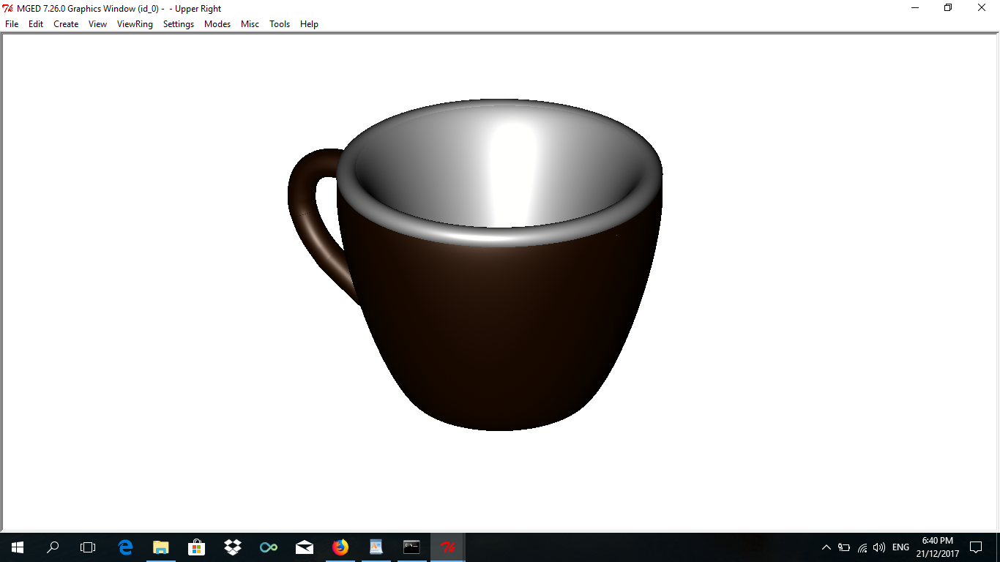

Process
1. Outside of the cup
Use "eto" for the cup so that it will have more rounder edges and middle. Name it cup.s. Then after that, adjust the shape's width and set the "D" if you want to make the edges and middle more rounder. Click "Apply" then to put some color on it, make it into a region first and named it cup.r then go to the Combination Editor and input "53 20 0" (dark brown color) on the Color GUI.
2. Handle
Create handle.s and use "pipe" for the handle so you can bend it to a more unique shape than the torus by clicking the "Append Point" then select the parts of the handle you wanted to add new points with. Adjust the new points to the desired shape and position by clicking "Move Point" and click the place where you want the points to be moved. The problem on this is that the adjusted points leave creases on the shape which gives it a rougher appearance and needs a lot of adjustments to lessen the creases. Do the same way on how put color on cup.r only name the new region handle.r.
3. Inside of the cup
To give it a white inside part, copy the shape of the outside cup (cp cup.s inside.s) and name it inside.s. Adjust its "r", and "Rotate C" until it is smaller and thinner than the outside cup. The space inside of the cup might now looked too small for a cup and also that cup.r would hide parts of inside.s so make a region of cup.r and inside.s as follows:
r inside.r u inside.s - cup.r
4. Rim
Place a torus for a rim so that the white color would overlap the brown cup rim and give it a nicer appearance. Adjust "Radius 1" to fit it to the cup's circumference, and "Radius 2" to fit it to the cup's width. After that make it into a region named rim.r.
5. Base
Use "sph" for the base then set its "C" to make it flatter. Make it into a region named base.r then type "53 20 0" on the Color GUI in Combination Editor.
6. Coffee (optional)
If you want to put coffee in your mug, use "rcc" then adjust its "H" "A,B" and "C,D" to fit in the cup. Name it coffee.s. Make it into a region and name it coffee.r then input "143 93 1" (light brown color) on the Combination Editor and set the Shader to "glass". Set the Mirror Reflectance to 0.05 to give it a liquid appearance and, to give it a more coffee-like appearance, set the Transparency to 0.1. The problem on setting the transparency to 0.1 rather than 0 is that the Command Window would "complain" on overlapping.
7. Combining all regions
Combine all the regions and name it coffeemug.c using this command:
comb coffemug.c u cup.r u inside.r u handle.r u rim.r u base.r u coffee.r
or without coffee.r:
comb coffemug.c u cup.r u inside.r u handle.r u rim.r u base.r
8. Raytracing the design
Now, Blast your design first before raytracing:
B coffeemug.c
Then raytrace your design using the Raytrace GUI in the File Menu and, for best results, set the Background Color to white, the view in "az35,el25", and also the Framebuffer option to "Overlay".
with coffee

without coffee